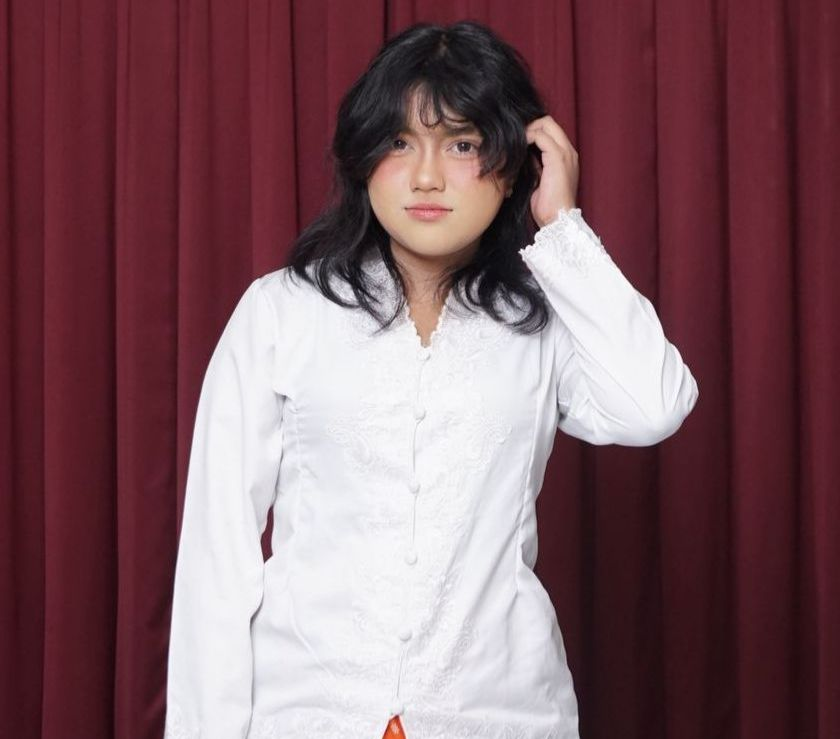

KKN — proyek tim
Chatbot layanan informasi (Tanya PICAN)

Chatbot yang menjawab pertanyaan warga tanpa harus menunggu petugas. Saya menyusun alur percakapan dan merapikan kumpulan pertanyaan menjadi data terstruktur.
Chatbot, dataset, kerja tim
Junior Software Engineer (AI-Assisted)
Mahasiswi Statistika Universitas Brawijaya. Saya mengolah data menjadi keputusan, lalu membangun produk yang memakainya.

Saya mahasiswi Statistika di Universitas Brawijaya. Sehari-hari saya bekerja dari data mentah: membersihkan CSV, menyusun basis data, menguji model di RStudio dan Gretl, lalu menyajikan hasilnya supaya orang non-teknis paham.
Kebiasaan itu terbawa ke pengembangan perangkat lunak. Saya memakai AI sebagai rekan kerja untuk menulis dan memperbaiki kode lebih cepat, sambil tetap menguji sendiri hasilnya sebelum dipakai.
Sekarang saya mencari peran Junior Software Engineer (AI-Assisted) di tim yang menghargai ketelitian data dan kemauan belajar cepat.
KKN — proyek tim
Chatbot yang menjawab pertanyaan warga tanpa harus menunggu petugas. Saya menyusun alur percakapan dan merapikan kumpulan pertanyaan menjadi data terstruktur.
Chatbot, dataset, kerja tim
Proyek pribadi
Aplikasi web yang memberikan rekomendasi konten atau musik berdasarkan suasana hati pengguna.
HTML, CSS, JavaScript
Proyek pribadi
Halaman ucapan yang isinya dibaca dari berkas CSV, jadi satu template bisa dipakai ulang untuk banyak nama tanpa mengubah kode.
HTML, CSS, CSV
Tugas kampus
Uji hipotesis dan regresi di Gretl dan Jamovi, pembersihan data di RStudio, serta perancangan basis data MySQL beserta kuerinya.
RStudio, Gretl, Jamovi, MySQL
Terbuka untuk peran junior, magang, dan proyek lepas.